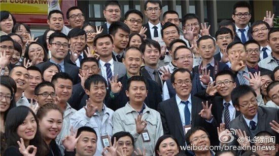

#社群运营#Richard说台湾做开源社区，没有人想过未来要把社区卖掉，也没人买，因为买来也不能赚钱，仍旧是做公益。大家参与开源基本是付出时间，智力和体力，不觉得应该获得什么回报，跟他们对待献血的态度一样。
Richard说二十年前台湾并不是这样，那时机会多，人人都忙着赚钱，鄙视穷人，觉得穷的根本原因是自己不努力。开源这种事情，在那种氛围下，无害，但也无益，所以号召力不大。- 跟现在的中国还是蛮像的。@Ada李力:#社群运营#Richard说台湾做开源社区，没有人想过未来要把社区卖掉，也没人买，因为买来也不能赚钱，仍旧是做公益。大家参与开源基本是付出时间，智力和体力，不觉得应该获得什么回报，跟他们对待献血的态度一样。
昨晚聚餐后后，五个人又聊到很晚。Richard和小Q都诧异在中国见到很多的女性工程师，Sunny和我观察到的数据，外企研发部门，女性也就是20%-30%的比例，并不算高。他俩一致说，在台湾几乎没有。女生都很嗲的，极少有愿意从事工程技术专业。
我们问Richard对大陆女性是什么看法， 他说：“彪悍”。@Ada李力:昨晚聚餐后后，五个人又聊到很晚。Richard和小Q都诧异在中国见到很多的女性工程师，Sunny和我观察到的数据，外企研发部门，女性也就是20%-30%的比例，并不算高。他俩一致说，在台湾几乎没有。女生都很嗲的，极少有愿意从事工程技术专业。
小Q说某大佬会单独和公司的每一个程序员喝咖啡，绕过中间管理层，有拉帮派之嫌。这位大佬曾是SUN ERI site lead。我说这是SUN的文化，团队负责人要保证和每个团队成员每月有一次单独的1:1时间。而且，每个人的日历是开放的，高层管理者会鼓励员工主动预约见面会谈。@Ada李力:Sunny说了解开源文化是进了SUSE之后，这家公司开阔了她的视野，让她看到世界有多大和有多精彩，因此她一直很感激公司。- 我当年对SUN也是这种感情。
朋友的疑问：为什么想到创业了，为什么要从IT转到一个新的医美行业？- 自从SUN被Oracle收购，我就一直想搞明白商业是怎么回事，创业去做一家公司，应该是最快的学习和了解途径。医美是上升趋势的行业，最近不管是北京的家，还是沈阳的公寓，电梯里的广告都有医美机构。
而且，创业更像是个规则清晰的商业游戏，既然自己精力旺盛，还是找个更有意思的游戏打打。@Ada李力:朋友的疑问：为什么想到创业了，为什么要从IT转到一个新的医美行业？- 自从SUN被Oracle收购，我就一直想搞明白商业是怎么回事，创业去做一家公司，应该是最快的学习和了解途径。医美是上升趋势的行业，最近不管是北京的家，还是沈阳的公寓，电梯里的广告都有医美机构。
赞同李想//@李想:我觉得成功做到这几点的创业者，企业大概率上还是很快就完蛋。最终，欠了别人的债务还不上，欠了员工的工资发不了，自己当了个末日英雄，坑了一堆人。创业需要努力和坚持，但真没必要这么痛苦，以及让一堆人跟着自己痛苦，痛苦到上述的程度，一定是路线错了。---:抱歉，作者已设置仅展示半年内微博，此微博已不可见。
先生对我创业，态度上越来越支持，说他看了很多创业者的文章，开始都很苦逼难熬，有的还很惨。所以他觉得现在有任何挫折都不算事儿，坚持就是胜利。- 我现在不这么看，创业就是看结果。开始的寒酸，过程的苦逼，最后的成功，这三者之间一点关系都没有。媒体喜欢讲故事，自己不要把故事当生活就好。
做企业的过程，绝大部分时间都是很乏味的，没有那么多跌宕起伏的情节。@Ada李力:先生对我创业，态度上越来越支持，说他看了很多创业者的文章，开始都很苦逼难熬，有的还很惨。所以他觉得现在有任何挫折都不算事儿，坚持就是胜利。- 我现在不这么看，创业就是看结果。开始的寒酸，过程的苦逼，最后的成功，这三者之间一点关系都没有。媒体喜欢讲故事，自己不要把故事当生活就好。
昨天听人说我是孔雀类型。翻翻当初的测试，老虎排在前面呢。@Ada李力:听同事提到过这个测试, 也找来做了一下, 得分排名依次是: 老虎, 孔雀, 变色龙, 猫头鹰, 考拉. 结果也有些让我意外. PDP性格测试：你是老虎、孔雀、考拉，还是猫头鹰、变色龙？ - 田成杰 - 职业日志 - 价值中国网 网页链接
这周六参加IT聚会，熟悉的氛围，熟悉的语言，还有老朋友们，真是开心，而且，回想起多年前，开源文化是如何地吸引我，以及引发的那种心里深深的自豪感，觉得是参与了一项高尚的事业。只是，我现在尝试走另一条路了，也许有一天会再重逢，也未可知。
海淀区的小升初择校政策越发收紧，我们收到金帆的通知，孩子及父亲和母亲都要到场，带上学籍卡和户口本原件及复印件，周日上午某时到某地开会，签协议。- 我想着怎么也会有几个缺席的爸妈吧，到现场一看，一个都不少。中国父母真是听话呀。
还给姣姣讲了姥爷的事迹。小学时有几个小痞子一直喜欢欺负任大队长学习也好的大姨。有一天，姥爷来到学校，把为首的小痞子拖到操场上暴揍一顿。后来就没人再欺负大姨了。小痞子家长说知道自己孩子赖，李大夫教训教训也好，当时学校也没说什么。- 这事儿放今天，姥爷除会受舆论谴责外，估计要吃官司。@Ada李力:平时寡言少语的#姣姣#忽然给我讲了很多她班同学的事情，我听得津津有味。她忽然说:“我都给你讲那么多了，你也给我讲讲你以前同学的事情，有没有特别讨厌的？”。我想了半天，就记得一个男生常往地上吐痰，吐完还用脚去蹭。每次打扫卫生到他那里都恶心半天。曾偷偷在他抽屉里放了檄文，无效。
回复@qyjohn_:嗯嗯//@qyjohn_:八卦才是社区最精彩的部分嘛。我早就从自己的博客点击量里面看来了，八卦文章的点击量和技术文章的点击量有数量级的差别。@Ada李力:昨晚聊一些八卦，发现所谈到的人名，基本都知道，大部分人还都见过面。国内的开源社区，真是个很小的圈子。
也怪不得国外的各种设防了。//@EmmaYU1999:国外的专利无法覆盖中国，需要在中国申请专利，哪怕你先发明出来的。所以按中国法律，国内抄袭这家反倒没有问题了。当年施家被法院判了几个亿的赔偿给温州的公司的案例轰动一时啊哈哈@MattiOunapuu:Olgugi, et ma ei ole maailmakuulus disainer, olen ma oma loomingule pühendunud ja loodan, et minu töö leiab austust ja lugupidamist ka teiste silmis. 我知道我并不知名，但我希望我的作品能够得到别人基本的尊重！
阿里员工用金庸书中别名，腾讯员工要起英文名，就是为了避免称呼职位头衔的文化吧。//@翟华微博://@三口一瓶奶:转发微博@头条新闻:#万象#【上海万科禁止内部称呼“总” 违者罚款100元】近日，上海万科内部文件流出，提到为推动合伙人以开放包容的心态、更亲密无间的协作共创共担共享，公司决定执行无“总”称谓要求，日常工作场合、会议场合或是邮件、微信等沟通过程，均按此执行，违者每次罚款100元。上海万科禁止内部称呼“总” 你怎么看 
//@王海鹏Seal:一入佛门，取个法号的意思 //@玄了个澄的: 腾讯不知道，阿里的花名文化主要还是为了塑造团体意识增强企业文化凝聚力吧。一进阿里本名基本就可以忘了 //@Ada李力:阿里员工用金庸书中别名，腾讯员工要起英文名，就是为了避免称呼职位头衔的文化吧。@头条新闻:#万象#【上海万科禁止内部称呼“总” 违者罚款100元】近日，上海万科内部文件流出，提到为推动合伙人以开放包容的心态、更亲密无间的协作共创共担共享，公司决定执行无“总”称谓要求，日常工作场合、会议场合或是邮件、微信等沟通过程，均按此执行，违者每次罚款100元。上海万科禁止内部称呼“总” 你怎么看